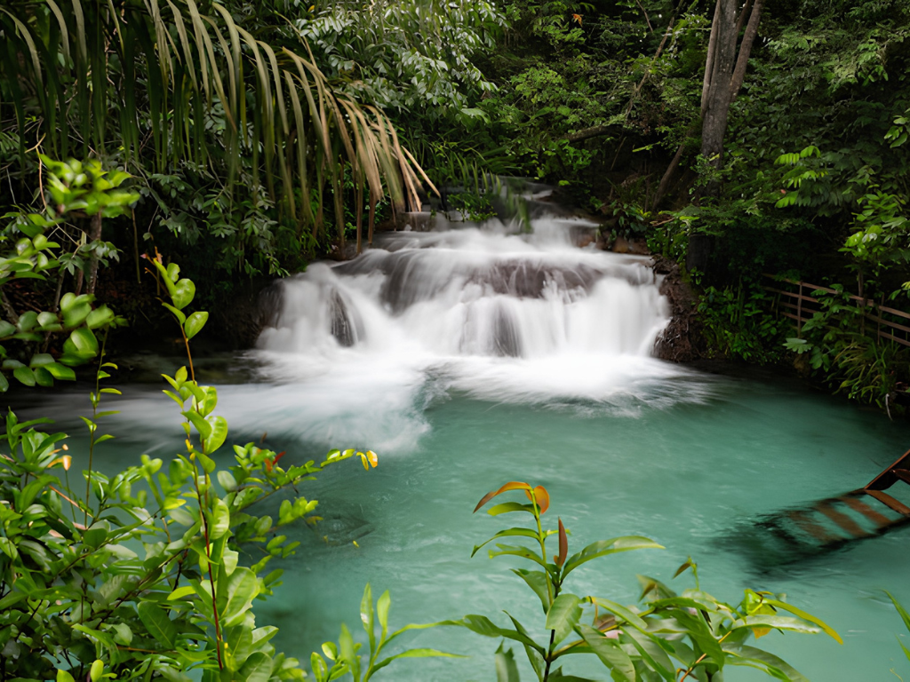

O Tocantins é o mais jovem estado brasileiro, criado em 1988, e está localizado na Região Norte do país. Conhecido por suas belas paisagens naturais, o estado reúne áreas de cerrado, rios extensos e importantes atrações ecológicas, como o Parque Estadual do Jalapão, famoso por suas dunas, cachoeiras e fervedouros. Sua capital, Palmas, foi planejada e construída para ser a sede administrativa do estado, destacando-se pelo crescimento urbano e pela qualidade de vida. A economia tocantinense é baseada principalmente na agropecuária, na agricultura e no comércio, enquanto sua cultura reflete a mistura de tradições sertanejas, indígenas e nortistas, tornando o Tocantins um estado de grande diversidade natural e cultural.

Voltar